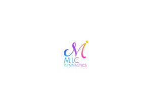
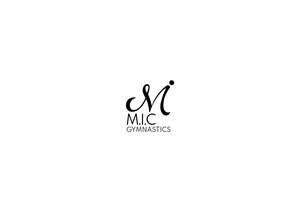

Trade Mark Journal No.2025/028 11 July 2025
UK00004189712 15 April 2025 (25,28,41)
Mark 1

Mark 2

- Class 25
- Clothing for sports; Sports clothing; Clothes for sports; Clothing for gymnastics; Sports clothing [other than golf gloves]; Sports garments; Gymnastic shoes.
- Class 28
- Clubs for gymnastics; Clubs for rhythmic gymnastics; Hoops for rhythmic sportive gymnastics; Ropes for rhythmic gymnastics; Rings for gymnastics; Gymnastics rings; Gymnastic training stools; Sports training apparatus; Springboards [for gymnastic]; Ribbons for rhythmic gymnastics; Rhythmic gymnastics ribbons; Gymnastics (Appliances for -); Appliances for gymnastics; High bars for gymnastics; Gymnastic apparatus; Gymnastic and sporting articles; Gymnastic articles; Gymnastic benches; Pommel horses [for gymnastic]; Sport hoops; Hoops for exercise.
- Class 41
- Sports coaching services; Sports coaching; Coaching services for sporting activities; Sports and fitness services; Sports club services; Coaching in the field of sports; Coaching services; Training of sports players; Sports camp services; Sports education services; Sports instruction services; Sports tuition, coaching and instruction; Training or education services in the field of life coaching; Sports training; Training in sports; Sports entertainment services; Educational services in the nature of coaching; Sport camp services; Education, entertainment and sport services; Educational and training services relating to games; Educational and training services relating to sport; Training of sports teachers; Educational services relating to sports; Education services relating to sports; Business training services; Providing facilities for sporting events, sports and athletic competitions and awards programmes; Sports and fitness; Club education services; Sporting education services; Providing sports training facilities; Services for the organisation of games; Competitions (Organization of sports -); Organization of sports competitions; Education, entertainment and sports; Services for the organisation of sports events; Sports activities; Physical fitness training services; Personal fitness training services; Personal coaching [training]; Physical fitness education services; Education services relating to business training; Coaching; Training services related to business; Entertainment services relating to sport; Coaching [training]; Ticket reservation and booking services for education, entertainment and sports activities and events; Arranging of sports competitions; Sports information services; Organising of sports competitions and sports events; Organising of sports events and of sports competitions; Recreation and training services; Business educational services; Business training consultancy services; Business mentoring services; Organisation of sports competitions; Gymnastics (Instruction in -); Gymnastics instruction; Instruction in gymnastics; Tuition in gymnastics; Gymnastic instruction; Organising gymnastics events; Gymnastics events (Organising of -); Gymnastics displays (Organising of -); Fitness and exercise training services; Conducting physical fitness conditioning classes; Provision of gymnastic instruction; Instruction in sports; Organizing and conducting college sport competitions; Teacher training services; Teaching academy services; Coaching in economic and management matters; Education, teaching and training; Consultancy relating to physical fitness training; Providing gymnastic facilities; Arrangement of sports competitions; Conducting fitness classes; Fitness and exercise instruction; Conducting of sports competitions; Tuition in physical fitness.
M.I.C GYMNASTICS LTD